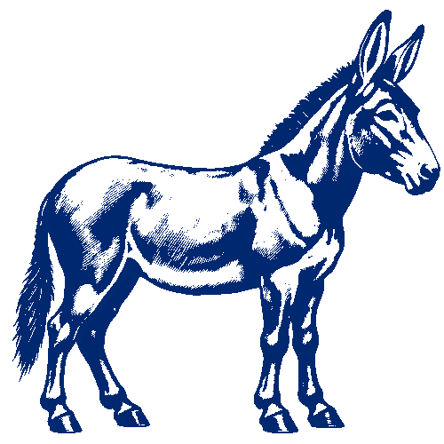
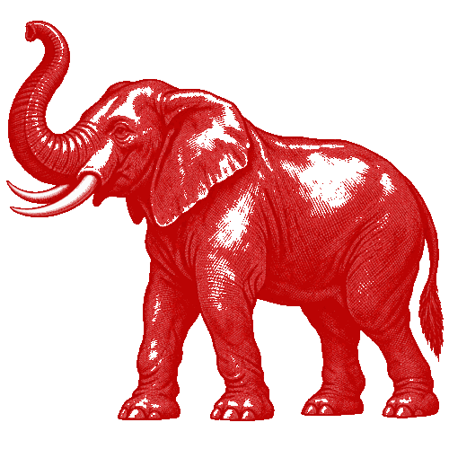

A plain-language guide to the organizations, traditions, movements, and historical realignments that have shaped political competition in the United States.

Democratic

Republican+ a wider political field
The dominant structure
The two major parties
For most of American history, political competition has been organized around two dominant parties at a time. The present Democratic-Republican pairing dates to the mid-nineteenth century, but neither party is internally uniform or historically static.
Democratic Party
One of the two contemporary major parties. Its coalitions, constituencies, and policy positions have changed substantially since its nineteenth-century formation.
The donkey is a widely recognized political symbol; it does not define the party's legal status.
Republican Party
One of the two contemporary major parties, formed in the 1850s amid the collapse of the Whigs and conflict over slavery's expansion.
The elephant is a widely recognized political symbol; it does not define the party's legal status.
The wider field
Minor, alternative, and state parties
These examples illustrate the broader political field. Their organization and ballot access change over time and across states. A future POWER registry should derive current legal status from election authorities rather than assuming that national visibility equals ballot qualification everywhere.
Libertarian Party
Generally associated with individual liberty, limited government, civil liberties, and market-oriented policy.
Nationally organized
Green Party
Generally associated with ecological sustainability, social justice, grassroots democracy, and nonviolence.
Nationally organized
Constitution Party
Generally associated with constitutional originalism, social conservatism, and limited federal power.
Nationally organized
Forward Party
A newer organization emphasizing electoral reform, problem-solving, and alternatives to conventional polarization.
Status varies by state
Working Families Party
A labor-oriented progressive party known in several states for cross-endorsement and fusion voting strategies.
State-centered organization
State and local parties
Examples include parties organized around statehood, regional autonomy, local policy, labor, or state-specific political traditions.
Jurisdiction-specific
How the system changed
American party-system eras
Historians often organize U.S. political development into party systems. Exact boundaries and labels are debated, but the framework helps explain why the names and coalitions of political parties change.
Federalists and Democratic-Republicans
The first durable national competition developed from disputes over federal power, economic policy, foreign affairs, and constitutional interpretation.
Democrats and Whigs
Jacksonian Democrats competed with Whigs over executive power, economic development, federal institutions, and the character of popular politics.
Republicans and Democrats
The collapse of the Whigs, the slavery crisis, Civil War, Reconstruction, and industrialization reorganized political competition.
Industrial realignment and reform movements
Populist, Progressive, Socialist, labor, agrarian, and prohibition movements influenced or challenged the major parties.
New Deal order and later realignments
Coalitions reorganized around economic policy, civil rights, region, religion, race, class, culture, and the changing role of government.
Historical directory
Parties that changed the conversation
Many parties disappeared organizationally while their issues, voters, and ideas entered later coalitions. Historical importance is not measured only by winning the presidency.
Federalist Party
Supported a comparatively strong national government and commercial development.
Democratic-Republican Party
Jeffersonian opposition to the Federalists; later fractured into new alignments.
Anti-Masonic Party
An early third party notable for popularizing national nominating conventions and party platforms.
Whig Party
Opposed Andrew Jackson's Democrats and promoted congressional government and economic development.
Liberty & Free Soil Parties
Organized opposition to slavery or its expansion and helped reshape antislavery politics.
American / Know-Nothing Party
A nativist movement centered on opposition to immigration and Catholic political influence.
Greenback & Populist Parties
Agrarian and labor movements challenged monetary policy, railroad power, and economic concentration.
Prohibition Party
A long-running minor party historically centered on alcohol prohibition and later social issues.
Socialist Party of America
Advanced labor rights, public ownership, social welfare, and democratic-socialist politics.
Progressive Parties
Several distinct parties used the Progressive label across different periods and coalitions.
Dixiecrat / States' Rights Party
A segregationist breakaway formed in opposition to the national Democratic civil-rights direction.
American Independent Party
Originated around George Wallace's presidential candidacy; later trajectories varied by state.
Words that are often confused
Party status is contextual
A group can be ideologically influential without being ballot-qualified, and a ballot line can exist in one state but not another.
Political party
An organization seeking to influence or control government, commonly by nominating or supporting candidates.
Party committee
An organizational committee subject to particular federal or state campaign-finance rules.
Ballot-qualified party
A party legally entitled to place candidates or a party label on a particular jurisdiction's ballot under that jurisdiction's rules.
Major party
A legal or informal classification that may depend on vote share, registration, representation, or statutory definitions.
Minor or third party
A party outside the two currently dominant parties; “third party” does not mean there are only three.
Independent candidate
A candidate running without a party nomination; independence is not itself necessarily a political party.
Authoritative starting points
POWER should treat this page as an educational layer and maintain any future live registry from official election and committee records.